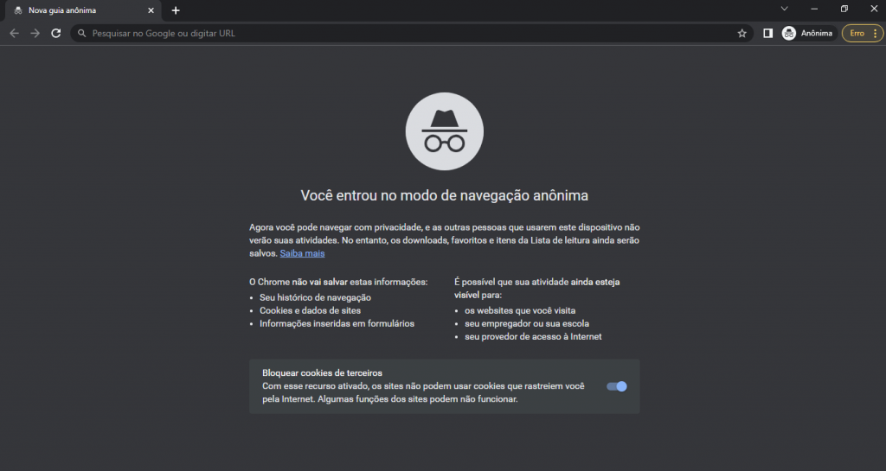
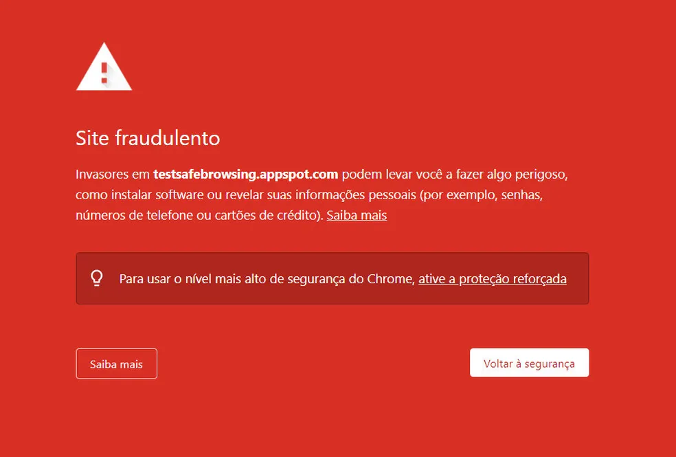

A internet é uma rede de informação que nos permite ver, ouvir, compartilhar e armazenar nossos dados, contudo, como todas as coisas ela também possui muitos riscos ligados ao fato de que suas informações valem muito e podem ser usadas de maneiras ilícitas por crackers (pessoas que usam a internet para atividades ilícitas). Seus dados podem valer muito de diversas formas para os crackers e a muitas formas atualmente que eles são capazes acessá-los ou corrompê-los sem que você nem mesmo saiba. A muitas formas de proteger seus dados, cuidados esses que devem ser tomados para garantir sua privacidade enquanto navega na internet, esses cuidados são:
Nunca confie apenas nos navegadores para utilizar a internet, além de existirem páginas com óbvios sinais de perigo cibernético, a páginas que conseguem esconder bem seu material ilícito de maneira que a segurança presente nos navegadores são incapazes de ver e notifica-lo adequadamente, o deixando vulnerável a muitos tipos de vírus de alta classe que podem estar escondidos em downloads, links, sistemas de compras e etc... tenha sempre um antivírus de confiança instalado para verificar arquivos vindos da internet e desconhecidos.
Nunca reutilize senhas, isso vale pra duas ou mais situações, sendo elas: nunca use a mesma senha de segurança em vários aplicativos e contas, isso torna a dedução dela fácil e se for descoberta, todos os aplicativos e contas que usam essa senha estarão vulneráveis dificultando a recuperação total dos seus dados, a próxima situação é usam uma mesma senha por muito tempo e em diferentes contas e celulares, sem modificações ou mudança completa das senhas após períodos regulares, torna a dedução mais fácil para o cracker. A senha ideal pode ser composta por oito caracteres, sendo uma mistura de letras, números e símbolos, nunca repetindo ou criando sequência para que fique o mais aleatória possível.
Sempre mantenha seu software do navegador e sistema operacional atualizado para que as brechas do sistema antigo sejam supridas pela nova atualização, isso vale para todas as atualizações que sempre possuem correções para as antigas, garantindo uma melhor segurança e mais recursos para serem utilizados para defender seus dados e privacidade enquanto navega e usa o computador.
Apesar do sistema de lembrar senha e preenchimento automático serem extremamente uteis para o dia a dia, quando você salva seus dados nos mecanismos de pesquisa os torna mais acessíveis para os crackers. Lembrar sua senha de cabeça ou anotá-la em um bloco de notas que não tenha conexão com a internet ou até mesmo anotá-la em um caderno é uma opção muito mais segura apesar de ser mais cansativo e desgastante se você for alguém que precisa de agilidade, mas sua segurança deve ser sempre a prioridade.
Use HTTPS para navegar na internet em páginas seguras e verificadas que possuem certificado SSL, essas paginas estão em conformidade com as normas e padrões de segurança exigidos e reduz o riscos de ataques de vírus e cibercriminosos já que possuem proteção que mantem as informações entre as duas partes seguras: costuma ter um cadeado antes do link.
Evite conectar em redes que você não conhece, redes livres ou gratuitas podem ser um ponto de coleta disfarçado e enquanto você está conectado, crackers podem estar roubando ou corrompendo seus dados através da conexão. Tenha sempre um plano de internet ou conecte-se com redes que você conhece para evitar riscos desnecessários aos seus dados e sua segurança privada.
Leia os termos de privacidade antes de aceitá-los, apesar de tedioso esse é o jeito mais fácil de pegar seus dados por causa da desatenção e tedio de ler os textos, sempre preste atenção com a colocação das palavras e seus significados, se possui palavras difíceis, pesquise o significado delas e tente nota se o texto está dizendo e seu significado. Os pop-ups também podem servir como uma armadilha, surgindo em momentos inconvenientes e fazendo com que você clique em algo que não e nem deve, podendo fazer que você abra páginas e links corrompidos, sempre ative o bloqueador para evitar esse incomodo.
